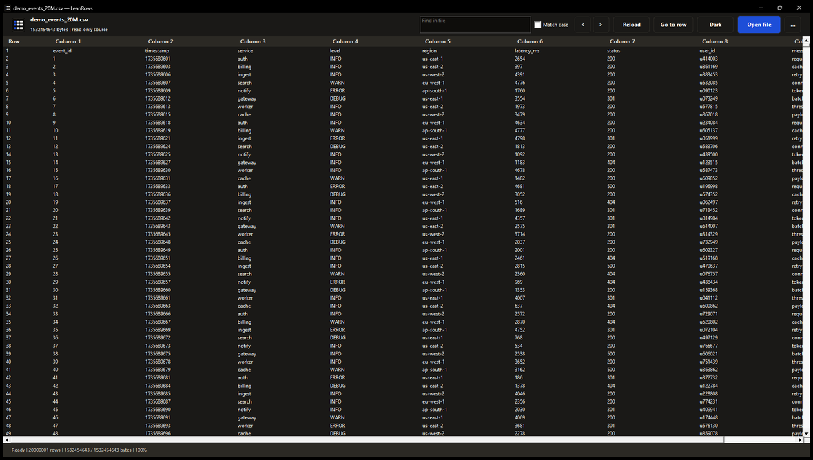

{kind=link}
CSV
Quote-aware logical records and independently bounded tabular fields.
.csvNative Windows x64 · Read only
LeanRows opens the rows you need without turning the entire file into an in-memory workbook. It is a focused desktop viewer for CSV, TSV, JSONL, NDJSON, log, and text files.
Search literal values inline, jump to an absolute row, and copy bounded selections while the source remains read only.
v0.1.3 is an unsigned Windows x64 ZIP. Verify the accompanying
.sha256 file before running it.
Measured on a real file
The capture below is an exact screenshot of the frozen v0.1.3 release
executable with a 1.53 GB synthetic event log open. The status bar
reads
Ready | 20000001 rows | 1532454643 / 1532454643 bytes | 100%,
so the file is fully indexed rather than partially loaded. Peak working
set across the session was 18.4 MB, which makes the file roughly
eighty times larger than the memory used to view it: only the rows in
the viewport are ever materialized. Excel stops at about 1.05 million
rows. LeanRows keeps the virtual owner-data grid below a responsive top
bar with file context, inline search, and direct actions, and the
appearance button cycles through System, Light, and Dark.

Progressive by construction
The source file remains the backing store. LeanRows reads positioned blocks, records compact checkpoints, and reconstructs only the viewport requested by the native list view.
Purposefully narrow
LeanRows does not infer spreadsheet types or silently treat the first row as a header. It displays the structure that is present in the file.
Quote-aware logical records and independently bounded tabular fields.
.csvTab-delimited rows presented as native, resizable columns.
.tsvOne physical row at a time, without constructing a document-wide tree.
.jsonl · .ndjsonLine-oriented viewing with bounded previews and visible invalid bytes.
.log · .txtLimits are features
These are code-level capacities, not benchmark claims. Fields, previews, queues, and operation scratch space are also bounded so a large source does not authorize a proportional allocation.
A smaller attack surface
File content is untrusted and remains inert. LeanRows does not execute formulas, ANSI sequences, HTML, paths, or URLs found in a row.
Offline by design. No telemetry, account, cloud service, or network file path.
Local regular files only. UNC, remote, device, and reparse-point sources are rejected.
Snapshot integrity. Source identity and revision evidence are checked while work proceeds.
Visible damage. Invalid bytes are escaped and oversized display values are marked as truncated.
No write path. Editing, saving, transformation, macros, plug-ins, and scripts are outside v0.1.
Evidence before adjectives
Every tagged build must pass formatting, workspace tests, strict Clippy, native-control smoke tests, deterministic packaging checks, and the final checksum contract on the pinned Rust toolchain.
The frozen local v0.1.3 candidate passed 25/25 aggregate checks against its exact release binary, including document, random-seek, sparse logical-scale, source-preservation, network-observation, and whole-process-tree memory checks. The tagged release workflow separately verifies the release commit, rebuild, quality gates, package checksum, and published assets; the local receipt is not a substitute for that tagged proof.
Inspect the QA harnessesBefore installing v0.1.3
Windows may display a SmartScreen warning. Download the ZIP and its matching SHA-256 sidecar from the same GitHub Release, then compare the published value before running or installing LeanRows.
Get-FileHash .\LeanRows-v0.1.3-windows-x64-unsigned.zip -Algorithm SHA256Installation is per-user and requires no administrator access. Protected Windows choices are preserved; direct defaults are recorded and changed only where no protected choice exists.